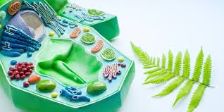
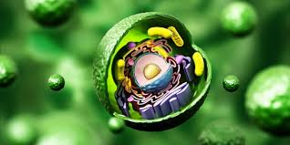
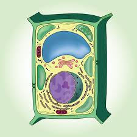

La célula vegetal es el tipo de célula que se encuentra en las plantas. Su estructura general y funcionamiento es similar al de la célula animal, porque ambas son células eucariotas (tienen núcleo verdadero y compartimientos internos). La célula vegetal es una célula eucariota con una forma definida y poliédrica (rectangular o poligonal). Se distingue por tener una pared celular rígida de celulosa, una gran vacuola central que ocupa gran parte del citoplasma y plastidios, como los cloroplastos, esenciales para la fotosíntesis. Además, la célula vegetal carece de centriolos y tiene una organización interna que le permite realizar funciones específicas para la vida de las plantas, como la fotosíntesis, el almacenamiento de nutrientes y la protección contra el estrés ambiental.


La historia de la célula vegetal comenzó en 1665 cuando Robert Hooke observó estructuras similares a panales en corcho, acuñando el término "célula". En el siglo XIX, científicos como Matthias Schleiden (1838) confirmaron que todas las plantas están formadas por células, estableciendo las bases de la teoría celular y la comprensión de su pared celular única
Se cree que células eucariotas primitivas que ya tenían mitocondrias, fagocitaron bacterias (con ADN circular) que realizaban la fotosíntesis mediante pigmentos y que sobrevivieron en el interior celular. Dichas bacterias fueron diferenciándose a lo largo del tiempo para dar origen a células eucariotas con cloroplastos y capaces de realizar el proceso fotosintético. Es por eso que los cloroplastos también tienen ADN propio, de tipo procariota (bacteriano), es decir, circular.
